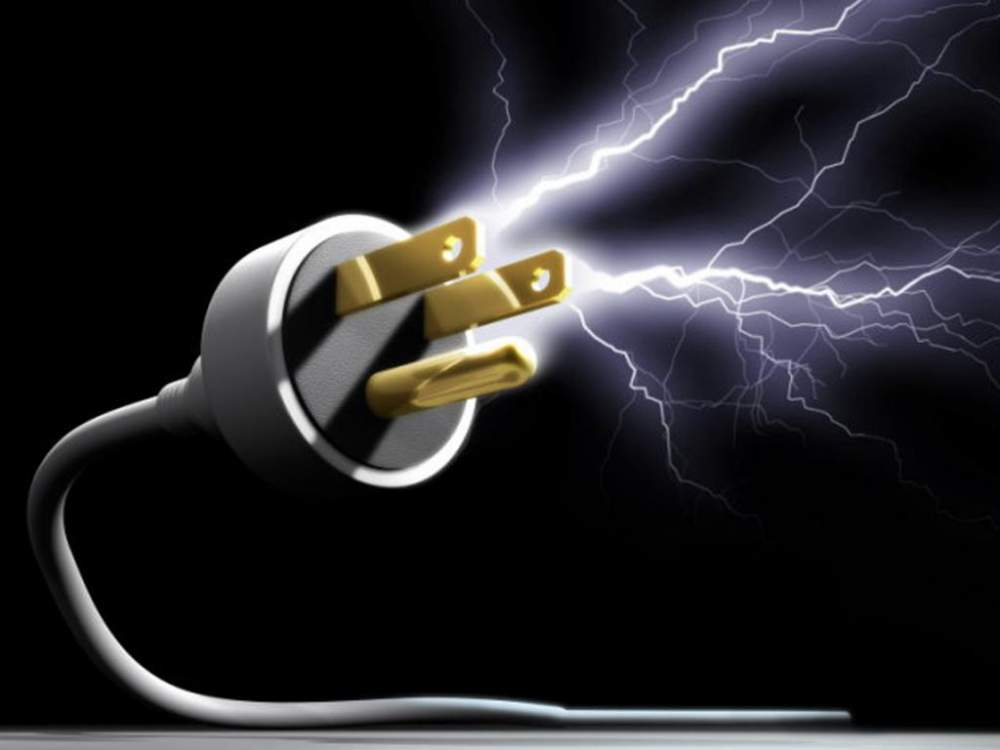
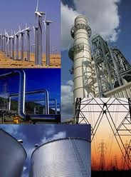
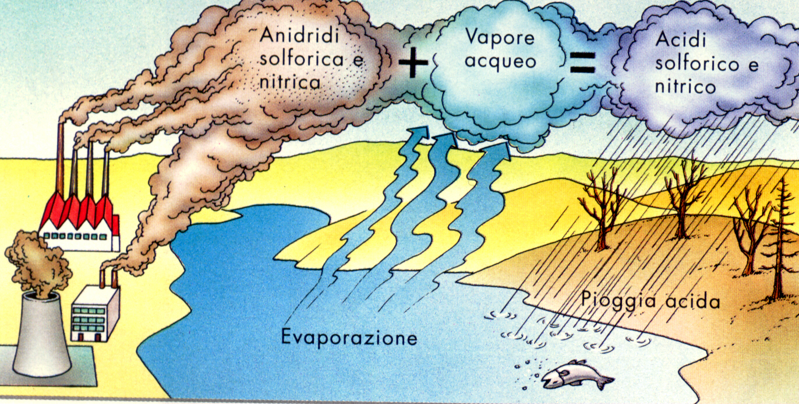
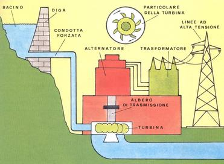
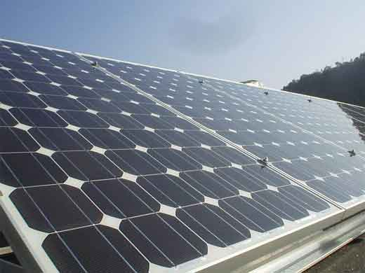
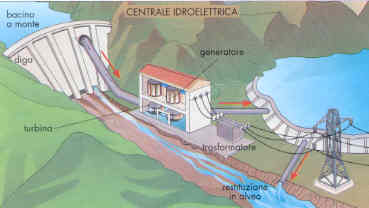
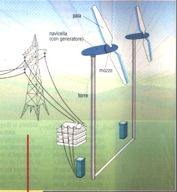

| argomento | descrizione | immagine |
|---|---|---|
| energia elletrica | Nel linguaggio comune, quando si parla di energia elettrica, ci si riferisce all’energia prodotta da una corrente elettrica, da un determinato flusso di cariche elettriche, vale a dire, che in un certo intervallo di tempo attraversa una data superficie. Detta specie d’energia si manifesta in natura, in una forma che non è immediatamente controllabile, non in maniera adeguata, per lo meno, e che pertanto non risulta passibile di sfruttamento da parte dell’uomo: le meravigliose scariche elettriche dei fulmini che tutti noi siano avvezzi ammirare, specie durante i temporali estivi. L’energia elettrica che trova impiego nelle nostre case e nelle attività produttive di qualsiasi genere, invece, è il risultato del processo di trasformazione di altre forme d’energia – l’energia chimica, quella meccanica, solare, termica, etc – mediante appositi dispositivi generalmente noti come generatori di corrente. Per quanto i primi studi sull’elettricità si facciano risalire, niente meno, che a Talete di Mileto (624 A.C.) e a Plinio il Vecchio (25 D.C.) gli esperimenti risolutivi ai fini dello sviluppo delle conoscenze scientifiche in materia di elettricità risalgono alla seconda metà del XVIII secolo, quando Alessandro Volta, riprendendo gli studi di Galvani sulle rane, in netta polemica con questi, intuì un nesso di causalità tra il contatto tra due distinti metalli e le contrazioni muscolari osservate sull’animale morto. I tessuti umidi e salati della rana, osservò Volta, costituivano un formidabile circuito per la circolazione dell’energia elettrica prodotta dal contatto tra i metalli. Sulla base di tali osservazioni, nel 1799 Volta inventò il primo dispositivo per la circolazione della corrente elettrica, una pila di dischi di metallo alternati da dischetti di cartone imbevuti di una soluzione salina, che fu diretta antesignana della pila elettrica e, che dal suo nome, appunto, fu battezzata pila voltaica. Fu a Thomas Edison, un promettente inventore ed imprenditore statunitense, che dobbiamo una delle più importanti applicazioni delle scoperte di Volta, la lampadina ad incandescenza, impiegata per alimentare piccoli impianti a corrente continua alla fine dell’800, mentre risalgono ai primi del ‘900 le prime applicazioni della corrente alternata mediante l’uso di appositi dispositivi detti trasformatori. Innumerevoli passi, com’è chiaro, sono stati fatti da allora, ed oggi, come accennato, la produzione di energia elettrica avviene su larga scala mediante un complesso processo di trasformazione di altre forme d’energia, specie meccanica e termica, di regola all’interno di grandi centrali idroelettriche, termoelettriche e nucleari, sebbene sempre maggiore considerazione vadano conquistando fonti di produzione alternativa quali le biomasse o l’energia solare. |  |
| PRODUZIONE ENERGIA | La produzione di energia elettrica rappresenta il 'primo passaggio' nel processo che conduce dalla produzione fino all'utilizzatore finale di energia elettrica. Le altre fasi del processo sono la trasmissione di energia elettrica e la distribuzione di energia elettrica. Tipicamente la produzione avviene per conversione sempre a partire da una fonte primaria di energia attraverso le centrali elettriche e regolata dal dispacciamento (produzione centralizzata) oppure attraverso sistemi di autoproduzione attestati sulla rete elettrica di distribuzione (produzione distribuita). |  |
| centrali combustibili | Le centrali termiche a carbone fanno parte della famiglia delle centrali a combustibili fossili, nelle quali l'energia contenuta nelle sorgenti primarie di energia del carbone e della lignite è convertita in energia elettrica. A causa dei residui generati da queste fonti di energia, sono richiesti dei sistemi di desolforazione dei gas di scarico particolarmente costosi. Le centrali termiche a carbone convertono fino al 45% della loro energia in elettric |  |
| centrali Acombustibili naturali | I c. possono essere solidi, liquidi o gassosi, naturali o artificiali. C. solidi naturali sono il legno, la torba, la lignite ecc.; c. solidi artificiali sono il carbone di legna, il coke, il semicoke; c. liquidi naturali sono il petrolio e il bitume; c. liquidi artificiali sono l'alcol metilico, l'alcol etilico, frazioni del petrolio o derivati da queste frazioni (benzine, oli c. ecc.). Gas naturali e di miniera sono detti c. gassosi naturali: il più noto è il metano; i c. gassosi artificiali sono il gas di città, il gas d'altoforno, il gas dei forni a coke, l'acetilene, l'ossido di carbonio, l'idrogeno, che si possono ottenere dalla trasformazione dei c. solidi o liquidi (talora anche di quelli gassosi) attraverso processi di pirolisi, idrogenazione, conversione ossidante ecc. Questi processi tendono a una valorizzazione del c. d'origine o alla produzione di un c. di migliore utilizzazione, che brucia con rendimento più elevato.impiego dei combustibili La combustione è tanto migliore quanto più perfetta è la mescolanza del c. con l'aria, il che avviene più facilmente con i c. gassosi, i quali possono essere bruciati in due modi: mescolandoli all'aria prima dell'accensione (come negli apparecchi domestici) o facendo avvenire la mescolanza progressivamente durante la combustione (come nella maggior parte delle applicazioni industriali). I c. liquidi trovano largo impiego negli impianti a focolare e nei motori a combustione interna. I c. solidi si trovano in maggiore quantità, e per lungo tempo furono i soli usati nei processi di combustione. Attualmente, nonostante la rilevante parte destinata alla distillazione e alla gassificazione, vengono ancora usati su larga scala per la combustione diretta (per es. nelle centrali elettriche a carbone) tali e quali o dopo processi di depurazione |  |
| PANNELLI FOTOVOLTAICI | Un impianto fotovoltaico è un impianto elettrico costituito essenzialmente dall'assemblaggio di più moduli fotovoltaici, i quali sfruttano l'energia solare incidente per produrre energia elettrica mediante effetto fotovoltaico, della necessaria elettronica ed eventualmente di sistemi meccanici-automatici ad inseguimento solare. |  |
| CENTRALI IDROELETTRICHE | Per centrale idroelettrica si intende una serie di opere di ingegneria idraulica posizionate in una certa successione, accoppiate ad una serie di macchinari idonei allo scopo di ottenere la produzione di energia elettrica da masse di acqua in movimento. L'energia prodotta dalle centrali idroelettriche è da classificarsi a tutti gli effetti come energia rinnovabile in quanto, almeno in teoria, l'acqua può essere riutilizzata infinite volte per lo stesso scopo senza subire un processo di depurazione. Il concetto di rinnovabilità è subordinato alla costanza del volume annuo degli afflussi integrali. |  |
| centrali eoliche | In un parco eolico le singole turbine sono interconnesse tra loro con una linea di collegamento a media tensione (generalmente 34,5 kV) e con un sistema di comunicazione (per il cosiddetto remote monitoring). L'energia a medio voltaggio viene poi convertita in alta tensione tramite un trasformatore in una sottostazione ed immessa nella rete elettrica di trasmissione in corrispondenza di una cabina primaria. Le potenze nominali generate dall'impianto variano da installazione a installazione e dipendono strettamente dalle condizioni di ventosità del sito e dal numero e tipo di aerogeneratori, funzioni a sua volta dalle potenze desiderate o dei vincoli di sito. In molti casi riescono a coprire il fabbisogno elettrico dei comuni ospitanti garantendo anche un surplus energetico da cui l'operatore trae il profitto dell'investimento. Un parco eolico può essere on-shore (sulla terraferma) oppure off-shore (sul mare). I primi sono posti tipicamente in zone aperte o su rilievi collinari o montuosi, i secondi sul mare vicino a zone costiere. Sono spesso oggetto di contestazione per l'impatto paesaggistico, l'inquinamento acustico in alcuni casi e l'azione di disturbo sull'avifauna. In Italia alcuni dei più notevoli parchi eolici sono quelli di Poggio Imperiale (in Puglia) e di Montemurro (in Basilicata). |  |